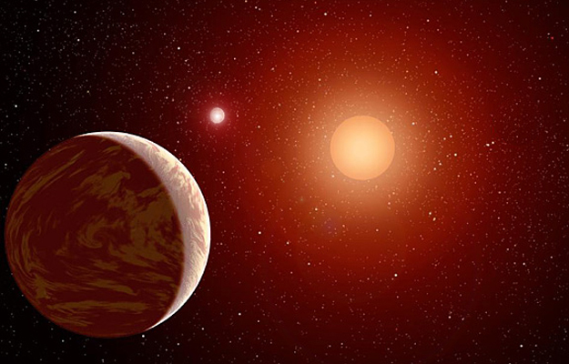
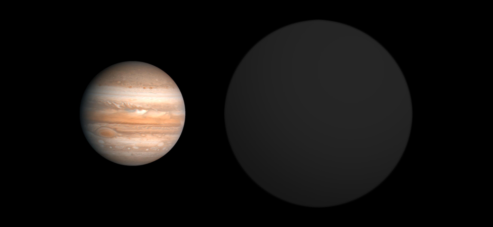
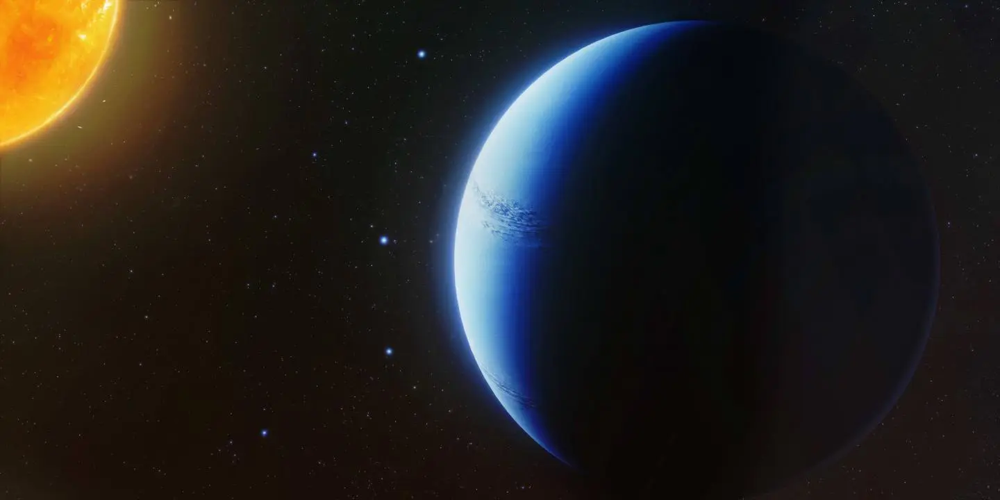
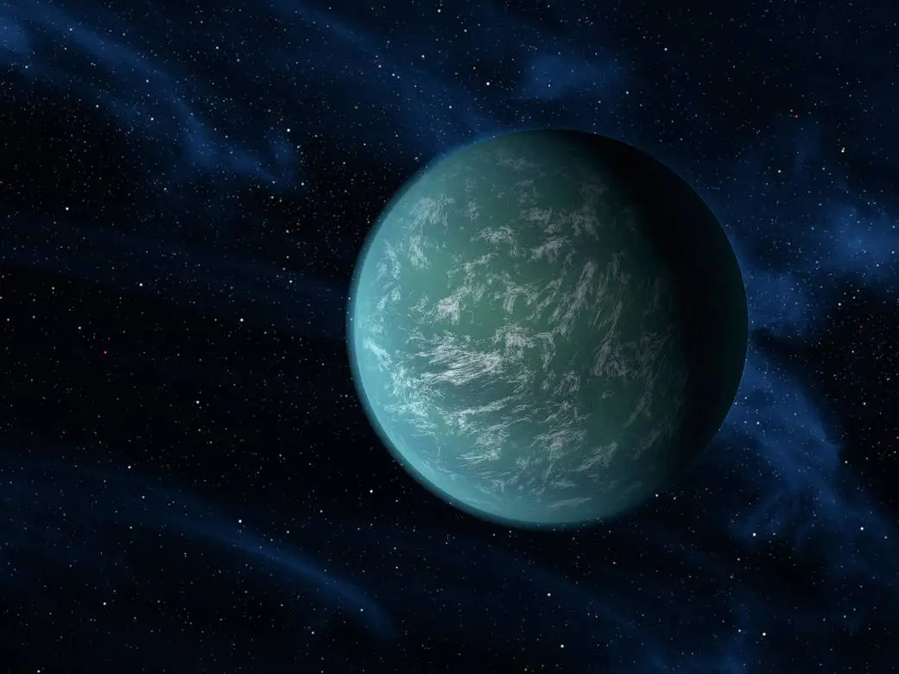
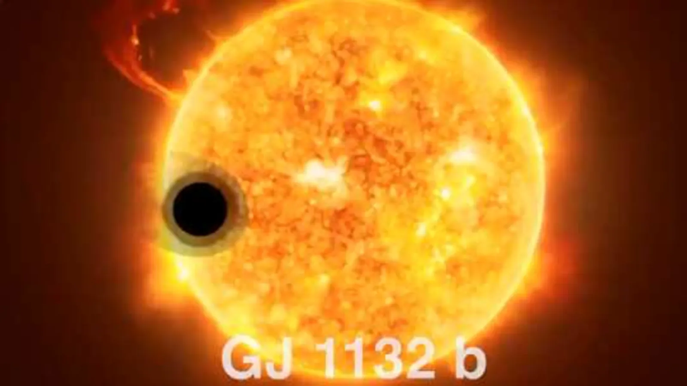
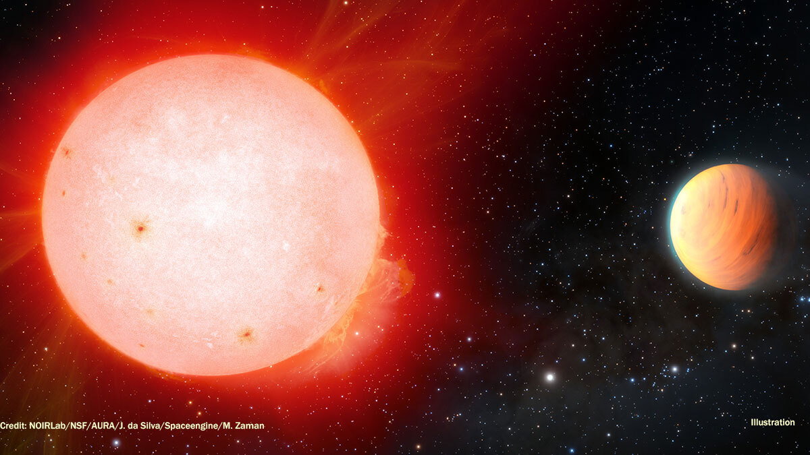

A giant planet composed mostly of gas. Also given the name Mulchatna, for a river in Alaska that supports indigenous and native populations.
KEPLER-16b
Discovered 2011
KEPLER-16b
Discovered 2011
Kepler-16b is a world where two suns set over the horizon instead of just one, the first Tatooine-like planet found in our galaxy.

WASP-12 b
Discovered 2008
WASP-12 b
Discovered 2008
The doomed planet WASP-12b is a hot Jupiter that orbits so close to its parent star, it's being torn apart. It takes this alien world only 1.1 days to completely circle its sun.

WASP-96 b
Discovered 2014
WASP-96 b
Discovered 2014
An international team found that WASP-96b is a world with a sodium rich atmosphere. The planet, located nearly 1,150 light-years from Earth, orbits its star every 3.4 days. It has about half the mass of Jupiter, and its discovery was announced in 2014.

KEPLER-22 b
Discovered 2011
KEPLE-22 b
Discovered 2011
A possible ocean world orbiting in the habitable zone—the region around a star where the temperature is right for liquid water, a requirement for life on Earth.

GJ 1132 b
Discovered 2015
GJ 1132 b
Discovered 2015
GJ 1132 b may have begun as a mini-Neptune, but is now a rocky world a little bigger than Earth. The planet may have lost one atmosphere but gained another from volcanic activity.

TOI-3757 b
Discovered 2022
TOI-3757
Discovered 2022
A gas giant exoplanet with the density of a marshmallow has been detected in orbit around a cool red dwarf .

TIC 172900988 b
Discovered 2021
TIC 172900988
Discovered 2021
A newly discovered planet about as big around as Jupiter belongs to a system that’s a stunner. The planet orbits two stars and, viewed from Earth, crosses the faces of both. That means this system puts on quite a show!